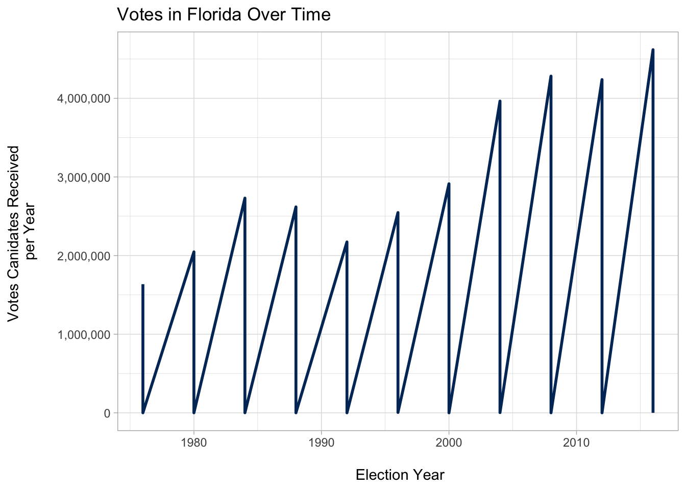

Everyone knows the importance data has on our everyday life. It dictates how our world in run and increasingly how literally everything works thanks to machine learning. However, anyone who has worked in the world of data and statistics, knows that it has limits. How limited is data? Well that is determined by how good the collection of it is.
Take the case of the 2016 Election, where every major political statistician had predicted a landslide Hillary Clinton win. Then election night came, where the world learned that the numbers were wrong, where the New York Times prediction ticker slowly moved states from Safe Clinton to “Leaning Trump.” Was that the fault of the algorithim or of the data? Or was it a greater problem, one that completely invalidates the use of data in politics?
For me, an amateur political data scientist, I really hope its the former. Yet, we live in a world where people have little trust and respect for media organizations and pollsters. We live in a country where people are willing to lie to pollsters to make their numbers prior to an election look worse on purpose. After all, being far ahead in the polls is not exactly a good rallying call to your potential voters. A call to action when you are just behind or tied is far more convincing than one where a win seems inevitable anyways.
After downloading the data, we must clean it up and prepare it for our graphical analysis.

As you can see, with total votes increasing every year in Florida for example, the voters become harder to predict. When the founders created this country, they originally only wanted the elite to vote. However, with today’s voting access being given to any citizen, regardless of intellect, voters are becoming less and less predictable.
While access to voting is a vital aspect to American democracy,